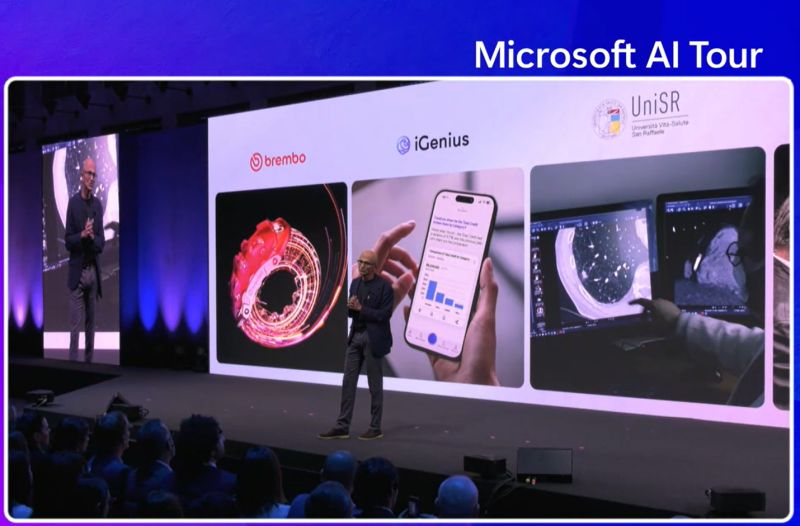
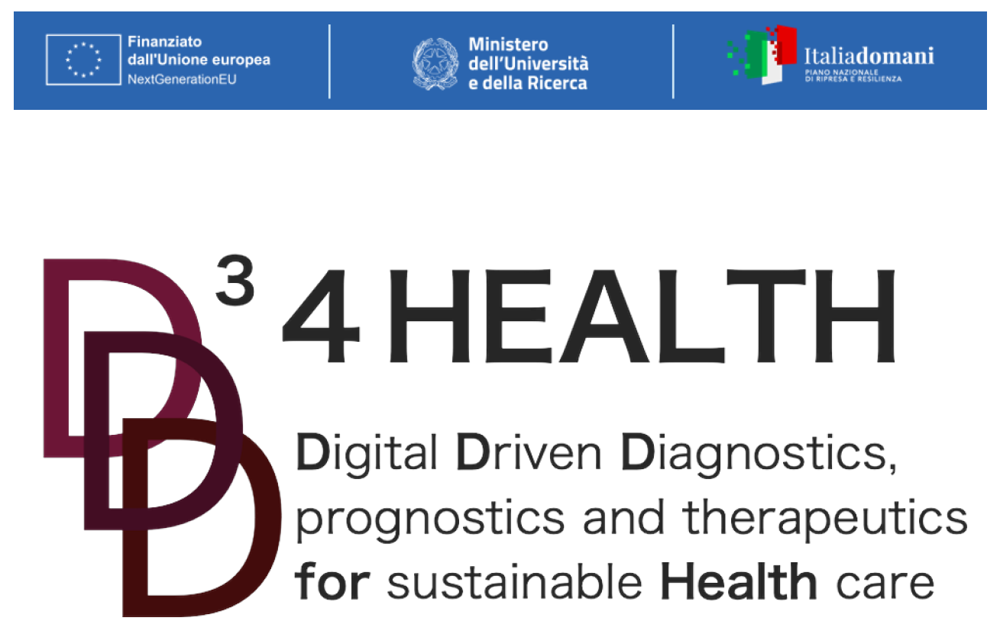
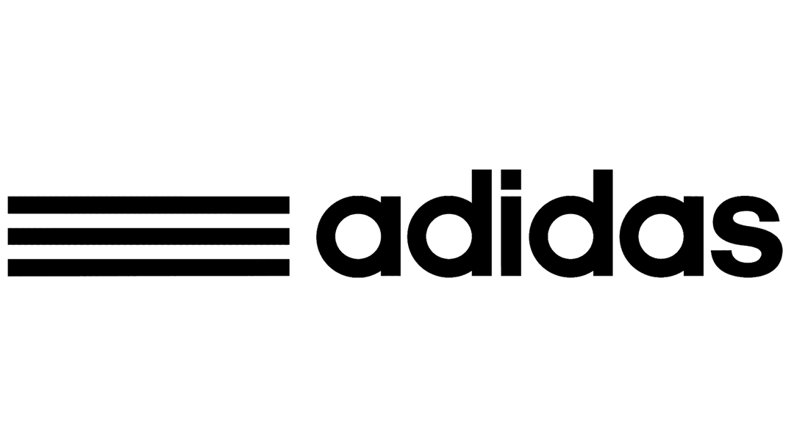
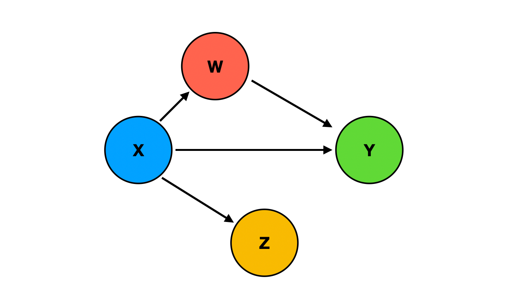
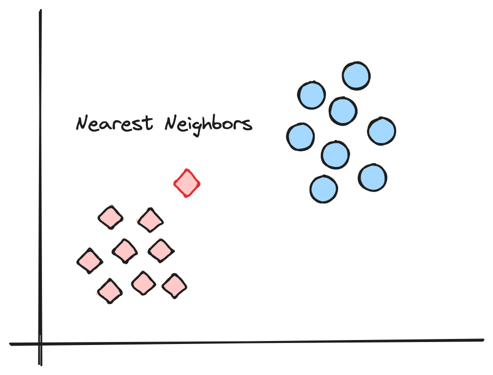
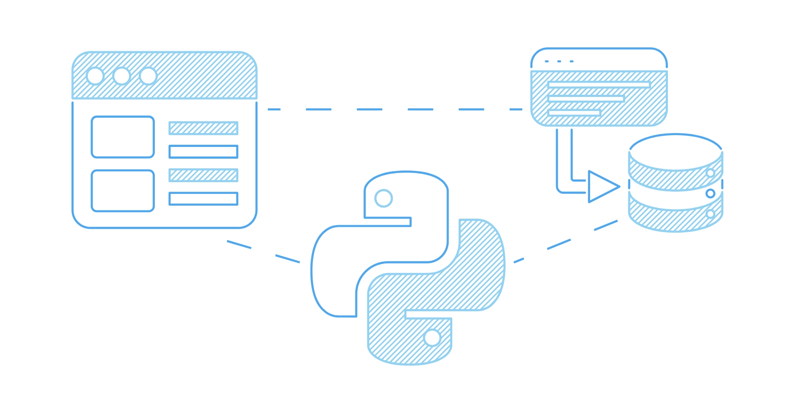

Project currently under development as member of the San Raffaele Hospital and UniSR AI Team in collaboration with Microsoft. It aims to create a comprehensive platform for the analysis of medical data to enhance the diagnosis and treatment of patients. The platform relies on Microsoft Azure and Power BI, leveraging advanced data analysis techniques to support clinicians in the decision-making process. Techniques such as predictive modeling, natural language processing (NLP), computer vision for medical imaging, and deep learning are employed to extract insights from structured and unstructured data, ultimately improving patient outcomes and operational efficiency.
In the picture above Satya Nadella (Microsoft's CEO) talks worldwide about our project during the Microsoft AI Tour in October 2024. Moreover, Wired dedicated an entire section to us in their magazine N° 112 published in March 2025.

The D34Health project, comprising 28 partners—including public and private universities, research institutes (notably San Raffaele Hospital and UniSR as principal promoters), and industry stakeholders—focuses on advancing healthcare research through sophisticated data science methodologies aimed at enhancing diagnosis, monitoring, and treatment strategies for five major pathologies: metastatic colorectal cancer, hepatic and biliary tract cancer, central nervous system malignancies, type I diabetes, and multiple sclerosis. I am contributing to this initiative as part of the San Raffaele Hospital and UniSR AI Team.

The project, officially provided by Adidas, aims to analyze the Adidas sales database for years 2020/2021 and identify key insights to help improve sales performance and optimize business strategies. By analyzing the sales data, the aim is to understand factors influencing sales, identify trends, and uncover opportunities for growth. The analysis is conducted using Python, scikit-learn (to forecast and predict sales and trends) and Power BI to provide interactive and insightful dashboards.

This project with case studies from Microsoft, TripAdvisor, and Uber was a deep dive into how causal inference can be combined with machine learning to move beyond simple prediction and actually support better decisions, especially in fields like healthcare, economics, and public policy. The tutorial walked through the fundamentals of causal thinking, such as potential outcomes and treatment assignment, and then explored modern techniques for estimating treatment effects using machine learning.
Python libraries used: econml, DoWhy, and causalml.

Developed a machine learning model to predict online shopping behaviors. The objective was to determine whether a user would complete a purchase based on their browsing session data. The k-Nearest Neighbors (k-NN) algorithm effectively distinguished between purchasing and non-purchasing sessions. This project honed my skills in data preprocessing, feature selection, and the practical application of k-NN for classification tasks.

Work in progress...